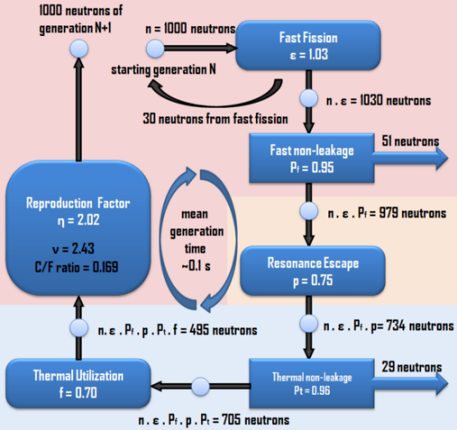

class: center, middle # NE585 ## NUCLEAR FUEL CYCLE ANALYSIS ### Burnup and depletion #### 5 --- # Outcomes for the lecture Understand what burnup is Evaluate fuel cycles using burnup --- # An operating cycle is 18 to 24 months Then we refuel Why? Core is shuffled on reload to maximize power Assemblies spent about 3 to 4 years in the core --- # Neutronics of the core change over each cycle $^{235}U$ is depleted and replaced by $^{239}Pu$ Non fissile Pu, minor actinides, fission products are generated in the fuel What are two of the big fission products? Affects reactivity --- # Fuel utilization is measured in burnup Why does nuclear have the weirdest metrics ever? "Yeah, we moved a couch and a new kitchen table Saturday afternoon. It took us 35 SWU." Burnup is the amount of energy extracted per unit mass (MTU MTHM) Amount of thermal energy produced per unit mass I think of it as 'fissionability' To increase burnup, increase the initial enrichment Fissioning 1.05 g U-235 = 1 MWD Fractional burnup = fissions/initial number of atoms --- # Burnup tracks radionuclide compositions from fresh loading to discharge $\eta f$ decreases in time Causes negative reactivity feedback Neutron transport equation becomes nonlinear Macroscopic cross sections depend on fuel compostion --- # Fissile composition changes are reflected as reactivity changes Uranium enrichment falls below 1% at discharge But Pu makes up for it <img src="https://latex.codecogs.com/gif.latex?\dpi{120}&space;\LARGE&space;^{238}_{92}U+^1_0n&space;\rightarrow&space;^{239}_{92}U&space;\rightarrow&space;^{239}_{93}Np&space;\rightarrow&space;^{239}_{94}Pu" title="\large ^{238}_{92}U+^1_0n \rightarrow ^{239}_{92}U \rightarrow ^{239}_{93}Np \rightarrow ^{239}_{94}Pu" /> <img src="https://latex.codecogs.com/gif.latex?\dpi{120}&space;\LARGE&space;^{239}_{94}Pu+^1_0n&space;\rightarrow&space;^{240}_{94}Pu&space;+^1_0n&space;\rightarrow&space;^{241}_{94}Pu&space;\rightarrow&space;^{241}_{95}Am" title="\LARGE ^{239}_{94}Pu+^1_0n \rightarrow ^{240}_{94}Pu +^1_0n \rightarrow ^{241}_{94}Pu \rightarrow ^{241}_{95}Am" /> <img src="https://latex.codecogs.com/gif.latex?\dpi{120}&space;\LARGE&space;^{241}_{95}Am+^1_0n&space;\rightarrow&space;^{242}_{95}Am&space;\rightarrow&space;^{242}_{96}Cm" title="\LARGE ^{241}_{95}Am+^1_0n \rightarrow ^{242}_{95}Am \rightarrow ^{242}_{96}Cm" /> <img src="https://latex.codecogs.com/gif.latex?\dpi{120}&space;\LARGE&space;^{242}_{96}Cm+^1_0n&space;\rightarrow&space;^{243}_{96}Cm+^1_0n&space;\rightarrow&space;^{244}_{96}Cm" title="\LARGE ^{242}_{96}Cm+^1_0n \rightarrow ^{243}_{96}Cm+^1_0n \rightarrow ^{244}_{96}Cm" /> <img src="https://latex.codecogs.com/gif.latex?\dpi{120}&space;\LARGE&space;^{235}_{92}U+^1_0n&space;\rightarrow&space;^{236}_{92}U+^1_0n&space;\rightarrow&space;^{237}_{92}U&space;\rightarrow&space;^{237}_{93}Np" title="\LARGE ^{235}_{92}U+^1_0n \rightarrow ^{236}_{92}U+^1_0n \rightarrow ^{237}_{92}U \rightarrow ^{237}_{93}Np" /> --- # Fission probability of actinides affected by parity Atom will fission if the compound nucleus energy exceeds fission barrier (5-6 MeV) There are binding and kinetic energy components from the absorbed neutron Atoms with even number of protons or neutrons are more tightly bound (parity) Absorption of odd nucleons then releases more energy Compound nucleus then forms in higher excited state More likely to exceed fission barrier --- # $^{239}Pu$ is the main fissile isotope in LWRs during second half of assembly lifetime Conversion ratio is defined as the rate of production:depletion rate of fissile material Greater than 1 = breeder Uranium-plutonium requires a fast reactor which we talked about with EBR-I Thorium can be run on the thermal spectrum with a LFTR --- # Thermal Pu cross sections are higher than U Accumulation of non-fissile plutonium, minor actinides, fission products increases spatial self-shielding Hardens the flux spectrum Decreases the reactivity worth of control rods Prompt neutrons emmitted in $^{239}Pu$ thermal fission greater than $^{235}U$ Adds reactivity But delayed neutron yield is lower High plutonium decreases time constants Lowers margin to prompt critical transient --- # Accumulation of fission products increases neutron absorption $^{149}Sm, ^{135}Xe$ are the big ones Super high absorption cross sections in the thermal region Which again, just use fast reactors Both radionuclides are fission products Also in decay chains from precursors Xe decays to Cs with 9 hour half life Can be removed in 90 hours Sm is stable --- # Xenon produces dead time Production rate from I decay Loss rate due to absorption during operation Produces a positive feedback with power Flux oscillates spatially in core Concentration grows after shutdown because of I decay Negative reactivity increase surpasses positive reactivity reserved in fuel Startup is not possible But I decay is 6.6 h --- # Burnup and depletion calculations are the source terms for disposal Heat production after shutdown is dominated by short lived, high activity radionuclides But long term, heat isn't a big deal It's the toxicity of long lived radionuclides like neptunium Main radionuclides after shutdown are $^{239}U,^{239}Np,^{134}I,^{138}Cs,^{140}Cs$ Short half lives - minutes to near an hour Neptunium 2.4 days Heat production affects fuel integrity after shutdown Need for pools --- # The short lived fission producrs are most significant in an accident Noble gases released if cladding fails Cs-137 can form gas compounds over 1300C Fuel melt can release Sr-90, barium, ruthenium, lanthanum ~3000C, I-131 contributes to radiation dose (inhaled) Eight day half life Cs-137 contamination affects land cultivation Takeup in bone --- # Long lived isotopes in used fuel are the long term contributor to dose Actinides - Pu-239, Pu-240, Np-237, Am-241, Am-243 Fission products - Tc-99, I-129, Cs-135 I-129 is 15 million year half life, but anionic so it's very mobile Cs-137, Sr-90 high heat but short lived ~300 years to decay away Pu-238 has 88 year half life but we can use it in RTGs --- # We have used Bateman equations for decay But a generalized form can be used for overall depletion calculations in the reactor <img src="https://latex.codecogs.com/gif.latex?\dpi{120}&space;\LARGE&space;\frac{dN_j}{dt}=\sum_{i&space;\neq&space;j}S_{i&space;\rightarrow&space;j}-\lambda_jN_j-\phi\sigma_j&space;N_j" title="\LARGE \frac{dN_j}{dt}=\sum_{i \neq j}S_{i \rightarrow j}-\lambda_jN_j-\phi\sigma_j N_j" /> rate of change = (production) - (removal) Source term is the sum of decay, transmutation, fission $S_{i \rightarrow j}=\lambda_i N_i+\phi\sigma_i N_i+\phi\gamma_i\Sigma_i^F$ --- # Simplified form for decay <img src="https://latex.codecogs.com/gif.latex?\dpi{120}&space;\LARGE&space;$^{241}_{94}Pu&space;\rightarrow&space;^{241}_{95}Am&space;\rightarrow&space;^{237}_{93}Np$" title="\LARGE $^{241}_{94}Pu \rightarrow ^{241}_{95}Am \rightarrow ^{237}_{93}Np$" /> $\frac{dN_P}{dt}=-\lambda_P N_P$ $\frac{dN_A}{dt}=\lambda_P N_P-\lambda_A N_A$ $\frac{dN_N}{dt}=\lambda_A N_A-\lambda_N N_N$ <img src="https://latex.codecogs.com/gif.latex?\dpi{120}&space;\LARGE&space;N_n(t)=\sum^n_i[N_i^0\prod_{j=i}^{n-1}\lambda_j&space;\sum_{j=i}^n\frac{e^{-\lambda_j&space;t}}{\prod_{p=i}^n&space;(\lambda_p-\lambda_j)}]" title="\LARGE N_n(t)=\sum^n_i[N_i^0\prod_{j=i}^{n-1}\lambda_j \sum_{j=i}^n\frac{e^{-\lambda_j t}}{\prod_{p=i}^n (\lambda_p-\lambda_j)}]" /> This is doable The problem is when you include all the other reactions --- # Burnup calculations can get up to 2000 equations in one system <img src="https://latex.codecogs.com/gif.latex?\dpi{120}&space;\LARGE&space;\underline{n}'=\underline{\underline{A}}\underline{n},\underline{n}(0)=\underline{n}_0" title="\LARGE \underline{n}'=\underline{\underline{A}}\underline{n},\underline{n}(0)=\underline{n}_0" /> coefficient matrix contains loss terms on the diagonal and production on off-diagonal <img src="https://latex.codecogs.com/gif.latex?\dpi{120}&space;\LARGE&space;\underline{n}(t)=e^{\underline{\underline{A}}t}\underline{n}_0" title="\LARGE \underline{n}(t)=e^{\underline{\underline{A}}t}\underline{n}_0" /> <img src="https://latex.codecogs.com/gif.latex?\dpi{120}&space;\LARGE&space;e^{\underline{\underline{X}}}&space;\equiv\sum_{k=0}^{\infty}\frac{1}{k!}{\underline{\underline{X}}}^k" title="\LARGE e^{\underline{\underline{X}}} \equiv\sum_{k=0}^{\infty}\frac{1}{k!}{\underline{\underline{X}}}^k" /> --- # Solution is reduced to the matrix exponential function But it can be up to 1700 x 1700 Up to 1E21 eigenvalues Approximation methods can be used to separate out short lived radionuclides This is the approach used for Serpent --- # Several assumptions are needed to derive the Bateman equations Reaction rates constant in time for Bateman Cross sections constant in time for neutron transport Changes in flux are averaged over one-group cross sections for Bateman Changes in nuclide concentrationss are in the macroscopic cross sections for neutron transport Coupling the two gives a nonlinear system --- # Linearizing systems is common Divide time domain into discrete depletion steps Transport problem is solved assuming constant reaction rates over time interval Flux spectrum is used to calculate microscopic transmutation cross sections Depletion problem is solved assuming constant flux spectrum remains over time interval Produces material compositions for the next transport solution --- # Selection of step length is a compromise between accuracy, cost This is the same for all approximation schemes Finite element method has a metric to determine spatial discretization v time step (courant stability) Explicit methods based on sequential calls to transport and depletion solvers while proceeding to new steps Implicit methods perform inner iterations to converge the two solutions before moving to the next step Explicit methods are computationally less expensive Subject to errors and instabilities when the depletion step is chosen too long --- # Euler is the most famous schemes $y_{n+1}=y_n+h\cdot f(y_n,t_n)$ <img src="https://latex.codecogs.com/gif.latex?\dpi{120}&space;\LARGE&space;y_{n+1}=y_n+h\cdot&space;f(y_{n+1},t_{n+1})" title="\LARGE y_{n+1}=y_n+h\cdot f(y_{n+1},t_{n+1})" /> Predictor-corrector methods also used $y_{n+1}^P=y_n+h\cdot f(y_n,t_n)$ <img src="https://latex.codecogs.com/gif.latex?\dpi{120}&space;\LARGE&space;y_{n+1}=y_n+\frac{h}{2}\cdot&space;[f(y_n,t_n)+f(y_{n+1}^P,t_{n+1})]" title="\LARGE y_{n+1}=y_n+\frac{h}{2}\cdot [f(y_n,t_n)+f(y_{n+1}^P,t_{n+1})]" /> Selection of h is critical for stability --- # Predictor-corrector method applies two transport calculations per step Predictor - reaction rates calculated at beginning of step Corrector - new reaction rates calculated at end of step Linear interpolate to get burnup over the step More computational cost --- class: middle center # [Numerical methods for nuclear fuel burnup calculations](http://montecarlo.vtt.fi/download/S32.pdf) --- class: middle,center # Neutron balance --- <a href="http://www.nuclear-power.net/wp-content/uploads/2016/02/Six-Factor-Formula-Four-Factor-Formula.png"></a> --- # Neutron consumption = production rates in the critical reactor $N_M$ atoms of fissile material per unit volume $\sigma_M$ absorption cross section $N_G,\sigma_G$ fertile material Fissionable material absorbs only thermal neutrons $N_M\sigma_M\phi$ neutron absorption rate by fissionable material $\eta_M N_M\sigma_M\phi$ fissions produce fast neutrons --- # Production of neutrons also comes from fast fission Fast fission factor $\epsilon$ defines net rate of production of fast neutrons to production rate of fast neutrons by thermal fission $\epsilon-1$ fast neutrons come from fission of fertile material with fast neutrons $\epsilon\eta_M N_M \sigma_M \phi$ production rate of fast neutrons from fission --- # Neutrons leak during scatter from the fast region to resonances $P_F$ probability the neutrons do not leak $\epsilon\eta_M N_M\sigma_M\phi P_F$ rate fast neutrons do not leak Neutrons can be absorbed in resonance region $p$ probability that escape to thermal region $\epsilon\eta_M N_M\sigma_M\phi P_F p$ neutrons produced in thermal region --- # Finally, thermal neutrons leak Neutrons complete a cycle as $\epsilon p \eta_M P_F P_T N_M \sigma_M \phi$ reach thermal region per unit volume per time Thermal neutrons are consumed by absorption in fissionable material, nonfissionable material, leakage Absorption in fissionable material leads to regeneration of fission neutrons --- # Let's derive the neutron balance in the critical reactor In NE450 we designed critical cores Now we derive what's actually going on Assume representative unit volume $N_M$ atoms of single fissile species with absorption cross section $\sigma_M$ $N_G$ atoms of single fertile material with absorption cross section $\sigma_G$ Same for coolant, moderator, structure (lumped together) Control absorbers Assume steady state amounts of Xe, Sm --- # Rate of thermal neutron production = consumption for intial loading <img src="https://latex.codecogs.com/gif.latex?\dpi{200}&space;\eta_M&space;\epsilon&space;p&space;P_F&space;P_T&space;N_M&space;\sigma_M&space;\phi=&space;\newline&space;DB^2\phi+N_M\sigma_M\phi+N_G\sigma_G\phi+\sum_P&space;N_P\sigma_P\phi$+&space;N_{Xe}\sigma_{Xe}\phi+N_{Sm}\sigma_{Sm}\phi+N_E\sigma_E\phi" title="\eta_M \epsilon p P_F P_T N_M \sigma_M \phi= \newline DB^2\phi+N_M\sigma_M\phi+N_G\sigma_G\phi+\sum_P N_P\sigma_P\phi$+ N_{Xe}\sigma_{Xe}\phi+N_{Sm}\sigma_{Sm}\phi+N_E\sigma_E\phi" /> --- # For the operating reactor, it is slightly more complicated <img src="https://latex.codecogs.com/gif.latex?\dpi{120}&space;\LARGE&space;\sum_M\eta_M&space;\epsilon&space;p&space;P_F&space;P_T&space;N_M&space;\sigma_M&space;\phi=&space;\newline&space;DB^2\phi+&space;\newline&space;\sum_MN_M\sigma_M\phi+&space;\sum_HN_H\sigma_H\phi+&space;\sum_P&space;N_P\sigma_P\phi$+&space;\sum_FN_F\sigma_F\phi$+&space;N_G\sigma_G\phi+&space;N_{Xe}\sigma_{Xe}\phi+&space;N_{Sm}\sigma_{Sm}\phi+&space;N_E\sigma_E\phi" title="\LARGE \sum_M\eta_M \epsilon p P_F P_T N_M \sigma_M \phi= \newline DB^2\phi+ \newline \sum_MN_M\sigma_M\phi+ \sum_HN_H\sigma_H\phi+ \sum_P N_P\sigma_P\phi$+ \sum_FN_F\sigma_F\phi$+ N_G\sigma_G\phi+ N_{Xe}\sigma_{Xe}\phi+ N_{Sm}\sigma_{Sm}\phi+ N_E\sigma_E\phi" /> Production = sum of all fissionable species H = nonfissionable higher isotopes (U-236, etc.) F = fission products lower than Xe, Sm [Example](https://piazza.com/class_profile/get_resource/j5trc64dgan3ru/j7wh7l4a85c4ik) --- # We can calculate burnup by deriving composition changes in time <img src="https://latex.codecogs.com/gif.latex?\dpi{300}&space;\frac{dN_{25}}{dt}=-N_{25}\sigma_{25}\phi(t)" title="\frac{dN_{25}}{dt}=-N_{25}\sigma_{25}\phi(t)" /> <img src="https://latex.codecogs.com/gif.latex?\dpi{300}&space;N_{25}=N_{25}^0e^{-\sigma_{25}\int_0^t\phi&space;dt'}" title="N_{25}=N_{25}^0e^{-\sigma_{25}\int_0^t\phi dt'}" /> $\theta \equiv \int_0^t\phi(t')dt'\rightarrow \theta = \overline{\phi} t$ <img src="https://latex.codecogs.com/gif.latex?\dpi{300}&space;N_{25}=N_{25}^0e^{-\sigma_{25}\theta}" title="N_{25}=N_{25}^0e^{-\sigma_{25}\theta}" /> --- # Flux time expresses extent of exposure to irradiation Defined in units of neutrons per square centimeter Also called fluence Typically if flux is 1E14 n/sq cm/s and irradiation time is 1E7 s Flux time is on the order of 1E21 neutrons per square centimeter So they call that neutrons per kilobarn because of course they do --- # U-236 is produced by capture in U-235 <img src="https://latex.codecogs.com/gif.latex?\dpi{200}&space;\frac{dN_{26}}{dt}=\frac{\alpha_{25}}{1+\alpha_{25}}\cdot&space;N_{25}\sigma_{25}\phi-N_{26}\sigma_{26}\phi" title="\frac{dN_{26}}{dt}=\frac{\alpha_{25}}{1+\alpha_{25}}\cdot N_{25}\sigma_{25}\phi-N_{26}\sigma_{26}\phi" /> $\alpha \equiv \frac{\sigma_A}{\sigma_F}$ $\frac{1}{1+\alpha} = \frac{\sigma_F}{\sigma_F+\sigma_A}$ What does this mean? $\frac{\alpha}{1+\alpha}=\frac{\sigma_A}{\sigma_F} \cdot \frac{\sigma_F}{\sigma_F+\sigma_A} =\frac{\sigma_A}{\sigma_F+\sigma_A}$ <img src="https://latex.codecogs.com/gif.latex?\dpi{200}&space;N_{26}=\frac{N_{25}^0\sigma_{25}\alpha_{25}}{(\sigma_{25}-\sigma_{26})(1+\alpha_{25})}\cdot(e^{-\sigma_{26}\theta}-e^{-\sigma_{25}\theta})" title="N_{26}=\frac{N_{25}^0\sigma_{25}\alpha_{25}}{(\sigma_{25}-\sigma_{26})(1+\alpha_{25})}\cdot(e^{-\sigma_{26}\theta}-e^{-\sigma_{25}\theta})" /> --- # Pu-239 production is more complicated <img src="https://latex.codecogs.com/gif.latex?\dpi{200}&space;\frac{dN_{49}}{dt}=" title="\frac{dN_{49}}{dt}=" /> <img src="https://latex.codecogs.com/gif.latex?\dpi{200}&space;N^0_{28}\sigma_{28}\phi" title="N^0_{28}\sigma_{28}\phi" /> thermal neutron absorption in U-238 <img src="https://latex.codecogs.com/gif.latex?\dpi{200}&space;+\eta_{X}\epsilon&space;P_F&space;(1-p)&space;N_{X}\sigma_{X}\phi" title="+\eta_{X}\epsilon P_F (1-p) N_{X}\sigma_{X}\phi" /> Fission neutrons from X absorbed by Y in the resonance region U-235, U-238; Pu-239, Pu-238; Pu-241, U-238 <img src="https://latex.codecogs.com/gif.latex?\dpi{200}&space;-N_{49}\sigma_{49}\phi" title="-N_{49}\sigma_{49}\phi" /> thermal neutron absorption in Pu-239 <img src="https://latex.codecogs.com/gif.latex?\dpi{150}&space;\large&space;+\frac{\alpha_{28}}{1+\alpha_{28}}\cdot\frac{\epsilon-1}{\eta_{28-1}}(\eta_{25}N_{25}\sigma_{25}+\eta_{49}N_{49}\sigma_{49}+\eta_{41}N_{41}\sigma_{41})\phi" title="\large +\frac{\alpha_{28}}{1+\alpha_{28}}\cdot\frac{\epsilon-1}{\eta_{28-1}}(\eta_{25}N_{25}\sigma_{25}+\eta_{49}N_{49}\sigma_{49}+\eta_{41}N_{41}\sigma_{41})\phi" /> fast neutron absorption U-235, Pu-239, Pu-241 --- # Net formation can be simplified with flux time <img src="https://latex.codecogs.com/gif.latex?\dpi{150}&space;\large&space;\frac{dN_{49}}{d\theta}=N_{28}^0\sigma_{28}+\kappa_{25}N_{25}\sigma_{25}-\gamma_{49}N_{49}\sigma_{49}+\kappa_{41}N_{41}\sigma_{41}" title="\large \frac{dN_{49}}{d\theta}=N_{28}^0\sigma_{28}+\kappa_{25}N_{25}\sigma_{25}-\gamma_{49}N_{49}\sigma_{49}+\kappa_{41}N_{41}\sigma_{41}" /> <img src="https://latex.codecogs.com/gif.latex?\dpi{150}&space;\large&space;\kappa_m&space;\equiv\eta_m\epsilon&space;P_F(1-p)+\eta_m\frac{\alpha_{28}}{1+\alpha_{28}}\cdot\frac{\epsilon-1}{\eta_{28}-1}" title="\large \kappa_m \equiv\eta_m\epsilon P_F(1-p)+\eta_m\frac{\alpha_{28}}{1+\alpha_{28}}\cdot\frac{\epsilon-1}{\eta_{28}-1}" /> <img src="https://latex.codecogs.com/gif.latex?\dpi{150}&space;\large&space;\gamma_{49}=1-\kappa_{49}" title="\large \gamma_{49}=1-\kappa_{49}" /> --- # The remaining isotopes of plutonium produced are Pu-242, Pu-241, Pu-240 <img src="https://latex.codecogs.com/gif.latex?\dpi{150}&space;\LARGE&space;\frac{dN_{42}}{d\theta}=\frac{\alpha_{41}}{1+\alpha_{41}}\cdot&space;N_{41}\sigma_{41}-N_{42}\sigma_{42}" title="\LARGE \frac{dN_{42}}{d\theta}=\frac{\alpha_{41}}{1+\alpha_{41}}\cdot N_{41}\sigma_{41}-N_{42}\sigma_{42}" /> <img src="https://latex.codecogs.com/gif.latex?\dpi{150}&space;\large&space;\frac{dN_{41}}{d\theta}=N_{40}\sigma_{40}-N_{41}\sigma_{41}" title="\large \frac{dN_{41}}{d\theta}=N_{40}\sigma_{40}-N_{41}\sigma_{41}" /> <img src="https://latex.codecogs.com/gif.latex?\dpi{150}&space;\large&space;\frac{dN_{40}}{d\theta}=\frac{\alpha_{49}}{1+\alpha_{49}}N_{49}\sigma_{49}-N_{40}\sigma_{40}" title="\large \frac{dN_{40}}{d\theta}=\frac{\alpha_{49}}{1+\alpha_{49}}N_{49}\sigma_{49}-N_{40}\sigma_{40}" /> Initial conditions all = 0 --- # An exact solution can be solved analytically, but why bother? Formation of Pu-239 by absorption of resonance neutrons from Pu-241 can be neglected <img src="https://latex.codecogs.com/gif.latex?\dpi{150}&space;\LARGE&space;\kappa_{41}&space;N_{41}&space;\sigma_{41}&space;<<&space;\gamma_{41}&space;N_{49}&space;\sigma_{49}" title="\LARGE \kappa_{41} N_{41} \sigma_{41} << \gamma_{41} N_{49} \sigma_{49}" /> <img src="https://latex.codecogs.com/gif.latex?\dpi{150}&space;\LARGE&space;\frac{dN_{49}}{d\theta}=N_{28}^0\sigma_{28}+\kappa_{25}&space;N_{25}\sigma_{25}-\gamma_{49}&space;N_{49}&space;\sigma_{49}" title="\LARGE \frac{dN_{49}}{d\theta}=N_{28}^0\sigma_{28}+\kappa_{25} N_{25}\sigma_{25}-\gamma_{49} N_{49} \sigma_{49}" /> $N_{49}(0)=0$ --- # Fission products are produced by $^{235}U$ <img src="https://latex.codecogs.com/gif.latex?\dpi{150}&space;\LARGE&space;\frac{dN_{25}^F}{d\theta}=\frac{1}{1+\alpha_{25}}\cdot&space;N_{25}\sigma_{25}" title="\LARGE \frac{dN_{25}^F}{d\theta}=\frac{1}{1+\alpha_{25}}\cdot N_{25}\sigma_{25}" /> $N_{25}^F(0)=0$ --- # Fission products also from $^{239}Pu$ <img src="https://latex.codecogs.com/gif.latex?\dpi{150}&space;\LARGE&space;\frac{dN_{49}^F}{d\theta}=\frac{1}{1+\alpha_{49}}\cdot&space;N_{49}\sigma_{49}" title="\LARGE \frac{dN_{49}^F}{d\theta}=\frac{1}{1+\alpha_{49}}\cdot N_{49}\sigma_{49}" /> $N_{49}^F(0)=0$ --- # And from $^{241}Pu$ <img src="https://latex.codecogs.com/gif.latex?\dpi{150}&space;\LARGE&space;\frac{dN_{41}^F}{d\theta}=\frac{1}{1+\alpha_{41}}\cdot&space;N_{41}\sigma_{41}" title="\LARGE \frac{dN_{41}^F}{d\theta}=\frac{1}{1+\alpha_{41}}\cdot N_{41}\sigma_{41}" /> $N_{41}^F(0)=0$ --- # The Pu solutions can be checked by an overall neutron balance <img src="https://latex.codecogs.com/gif.latex?\dpi{150}&space;\LARGE&space;\alpha_{49}&space;N_{49}^F=N_{40}+N_{41}+N_{42}+N_{41}^F" title="\LARGE \alpha_{49} N_{49}^F=N_{40}+N_{41}+N_{42}+N_{41}^F" /> --- # Burnup can be computed as a function of the neutron balance Fission energy is about 200 MeV per U-235 atom fissioned About 9.5E5 MWD/MTU $B=9.5E5 \cdot w$ <img src="https://latex.codecogs.com/gif.latex?\dpi{150}&space;\LARGE&space;w&space;\equiv&space;\frac{235\cdot&space;N_{25}^F+238\cdot&space;N_{28}^F+239\cdot&space;N_{49}^F&space;+241\cdot&space;N_{41}^F}{235\cdot&space;N_{25}^0+238\cdot&space;N_{28}^0}" title="\LARGE w \equiv \frac{235\cdot N_{25}^F+238\cdot N_{28}^F+239\cdot N_{49}^F +241\cdot N_{41}^F}{235\cdot N_{25}^0+238\cdot N_{28}^0}" /> So Pu accumulation can be plotted as a function of burnup --- # U-238 continuously depletes during operation <img src="https://latex.codecogs.com/gif.latex?\dpi{200}&space;\large&space;N_{28}(\theta)=N_{28}^0-N_{28}^0\sigma_{28}\theta-\kappa_{25}(1+\alpha_{28})N_{25}^F-\kappa_{49}(1+\alpha_{49})N_{49}^F-N_{28}^F" title="\large N_{28}(\theta)=N_{28}^0-N_{28}^0\sigma_{28}\theta-\kappa_{25}(1+\alpha_{28})N_{25}^F-\kappa_{49}(1+\alpha_{49})N_{49}^F-N_{28}^F" /> Initial amount of atoms U-238 Absorption of thermal neutrons Absorption of resonance,fast neutrons from U-235 fission Absorption of resonance,fast neutrons from Pu-239 fission Loss due to fast fission of U-238 --- # The overall neutron balance can be checked <img src="https://latex.codecogs.com/gif.latex?\dpi{200}&space;\large&space;N_{28}=N_{28}^0-N_{28}^F-N_{49}-N_{49}^F-N_{40}-N_{41}-N_{41}^F-N_{42}" title="\large N_{28}=N_{28}^0-N_{28}^F-N_{49}-N_{49}^F-N_{40}-N_{41}-N_{41}^F-N_{42}" /> --- class: center,middle # Fisson product production --- # FP atoms can be determined from the number of fissions <img src="https://latex.codecogs.com/gif.latex?\dpi{200}&space;\large&space;N_i(t)&space;=&space;Y_{25}^iN_{25}^F+Y_{49}^iN_{49}^F" title="\large N_i(t) = Y_{25}^iN_{25}^F+Y_{49}^iN_{49}^F" /> $N_i(t)$ number of i FP atoms $N_m^F$ number of m atoms fissioned $Y_m^i$ cumulative yield of i FP atom by thermal fisson of m Cumulative fission is the fracton of fissions that directly yield the nuclear and its radioactive decay precursors Sum of the direct yields of the nuclide and decay precursors ---  --- # The fission product production equations can be modified <img src="https://latex.codecogs.com/gif.latex?\dpi{200}&space;\large&space;\frac{N_{25}^F}{dt}=N_{25}&space;\sigma_{25}^{fission}&space;\overline{\phi}" title="\large \frac{N_{25}^F}{dt}=N_{25} \sigma_{25}^{fission} \overline{\phi}" /> <img src="https://latex.codecogs.com/gif.latex?\dpi{200}&space;\large&space;\frac{N_{49}^F}{dt}=N_{49}&space;\sigma_{49}^{fission}&space;\overline{\phi}" title="\large \frac{N_{49}^F}{dt}=N_{49} \sigma_{49}^{fission} \overline{\phi}" /> Neglect absorption in FP and precursors For t > T, no fission --- # Individual FP atom production can be obtained For t < T <img src="https://latex.codecogs.com/gif.latex?\dpi{200}&space;\large&space;\frac{dN_i}{dt}=Y_{25}^i&space;N_{25}\sigma_{25}^f\overline{\phi}+Y_{49}^i&space;N_{49}\sigma_{49}^f\overline{\phi}-\lambda_iN_i" title="\large \frac{dN_i}{dt}=Y_{25}^i N_{25}\sigma_{25}^f\overline{\phi}+Y_{49}^i N_{49}\sigma_{49}^f\overline{\phi}-\lambda_iN_i" /> For t > T <img src="https://latex.codecogs.com/gif.latex?\dpi{200}&space;\large&space;\frac{dN_i}{dt}=-\lambda_iN_i" title="\large \frac{dN_i}{dt}=-\lambda_iN_i" /> --- # With post irradiation cooling Cooling time C <img src="https://latex.codecogs.com/gif.latex?\dpi{200}&space;\large&space;N_i(T+C)=e^{-\lambda_iC}\int_0^Te^{-\lambda_i(T-t)}&space;(Y_{25}^iN_{25}\sigma_{25}^f\overline{\phi}+Y_{49}^iN_{49}\sigma_{49}^f\overline{\phi})dt" title="\large N_i(T+C)=e^{-\lambda_iC}\int_0^Te^{-\lambda_i(T-t)} (Y_{25}^iN_{25}\sigma_{25}^f\overline{\phi}+Y_{49}^iN_{49}\sigma_{49}^f\overline{\phi})dt" /> With long lived nuclides which are most important anyway <img src="https://latex.codecogs.com/gif.latex?\dpi{200}&space;\large&space;N_i(T+C)=e^{-\lambda_iC}\int_0^T&space;(Y_{25}^iN_{25}\sigma_{25}^f\overline{\phi}+Y_{49}^iN_{49}\sigma_{49}^f\overline{\phi})dt" title="\large N_i(T+C)=e^{-\lambda_iC}\int_0^T (Y_{25}^iN_{25}\sigma_{25}^f\overline{\phi}+Y_{49}^iN_{49}\sigma_{49}^f\overline{\phi})dt" /> By definition <img src="https://latex.codecogs.com/gif.latex?\dpi{200}&space;\large&space;N_i(T+C)=e^{-\lambda_iC}[Y_{25}^iN_{25}^F(T)+Y_{49}^iN_{49}^F(T)]" title="\large N_i(T+C)=e^{-\lambda_iC}[Y_{25}^iN_{25}^F(T)+Y_{49}^iN_{49}^F(T)]" /> --- class: center,middle # Radioactivity from neutron activation --- # We have talked about helium generation for the gas cooled reactors ---